Analiza rješenja · JOI Spring Camp 2020 · Dan 4
Plan liječenja
O ovom članku
Tekst je prijevod službene japanske prezentacije rješenja, preoblikovan u članak. Slajdovi su ugrađeni kao slike; natpis pod svakim slajdom je prijevod teksta na njemu. Dijelovi označeni kao trenerska napomena nisu u izvornoj prezentaciji — dodani su da popune korake koje slajdovi preskaču ili samo skiciraju.
Slajdovi
Sažetak
izvorni slajdovi 1–2
-
1Naslovni slajd: Treatment Project, analiza: nxteru. -
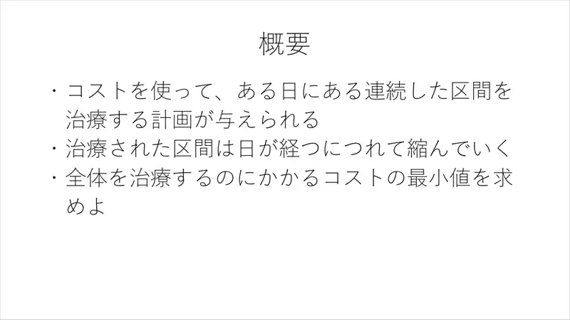
2Sažetak. Zadani su planovi koji uz trošak određenog dana liječe interval; izliječeni se interval s vremenom skuplja. Najmanji trošak da svi budu izliječeni.
← → tipke ili klik na sliku
Podzadaci 1–2 9 bodova
Koraci algoritma
Pokrivanje intervalima i iscrpno
izvorni slajdovi 3–5
-
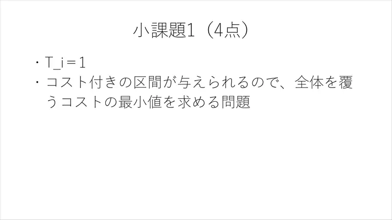
3Podzadatak 1. $T_i = 1$: intervali s cijenama — pokrij sve uz minimalan trošak. -
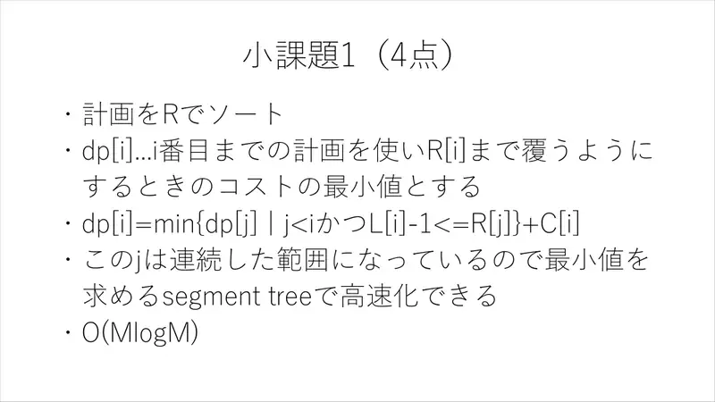
4Sortiraj po $R$; $\mathrm{dp}[i]$ = min trošak da s planovima do $i$ pokrijemo do $R_i$: $\mathrm{dp}[i] = \min\{\mathrm{dp}[j] : j < i,\ L_i - 1 \le R_j\} + C_i$. Skup $j$ je interval → segmentno stablo za minimum, $O(M\log M)$. -
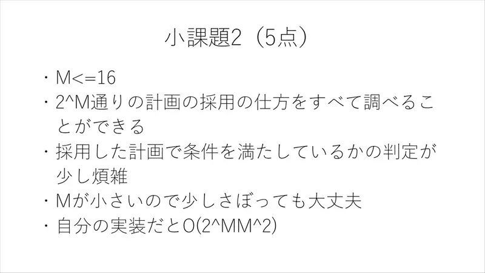
5Podzadatak 2. $M \le 16$: svih $2^M$ podskupova; provjera uvjeta je pomalo mučna, ali $M$ je mali — autorova implementacija $O(2^M M^2)$.
← → tipke ili klik na sliku
Podzadatak 3 30 bodova
Koraci algoritma
Uvjet kao graf
izvorni slajdovi 6–9
-
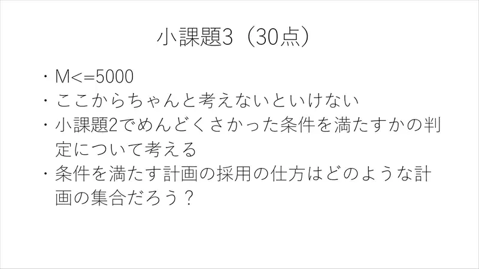
6Od sada treba pravo razmišljanje: kakav skup planova zadovoljava uvjet iz podzadatka 2? -
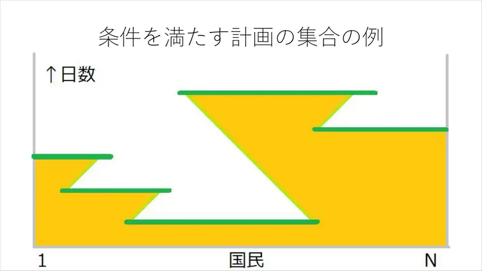
7Primjer skupa planova koji zadovoljava uvjet (dijagram kuća × dana). -
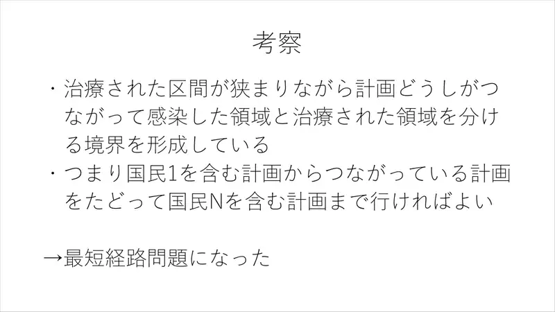
8Opažanje. Izliječeni intervali, dok se sužavaju, spajaju se međusobno i tvore granicu između zaraženog i izliječenog područja. Dovoljno je od plana koji sadrži građanina $1$ preći po povezanim planovima do plana koji sadrži građanina $N$ → najkraći put. -
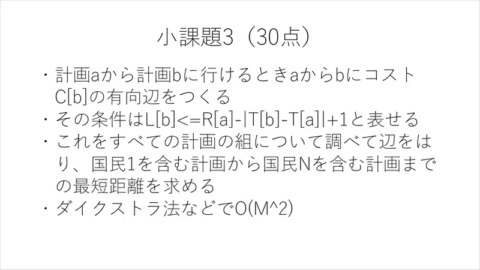
9Iz plana $a$ u plan $b$ brid cijene $C_b$ ako $L_b \le R_a - |T_b - T_a| + 1$. Provjeri sve parove, Dijkstra: $O(M^2)$.
← → tipke ili klik na sliku
Podzadatak 4 61 bod
Koraci algoritma
Dvije dobre osobine
izvorni slajdovi 10–13
-
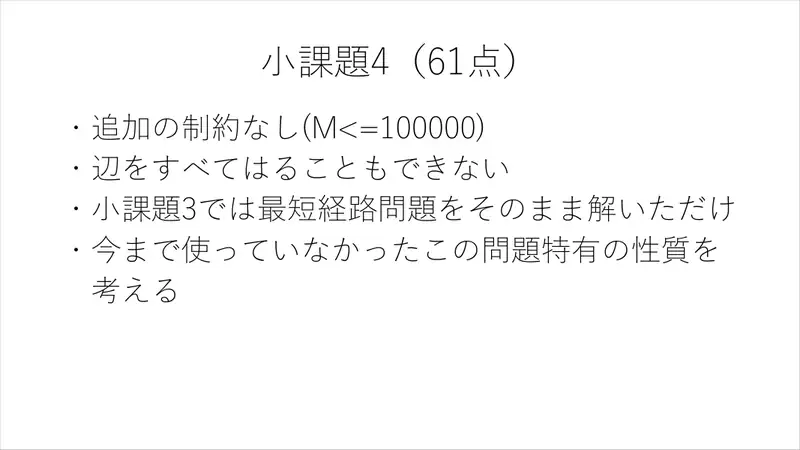
10$M \le 10^5$: ne možemo ni nabrojati bridove. Treba iskoristiti posebnosti problema. -
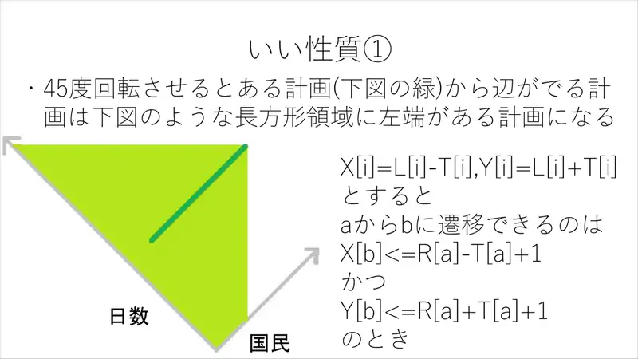
11Osobina 1. Rotacijom za $45^\circ$: $X_i = L_i - T_i$, $Y_i = L_i + T_i$. Iz $a$ se ide u $b$ ako $X_b \le R_a - T_a + 1$ i $Y_b \le R_a + T_a + 1$ — planovi čiji lijevi kraj leži u pravokutnom (kvadrantnom) području. -
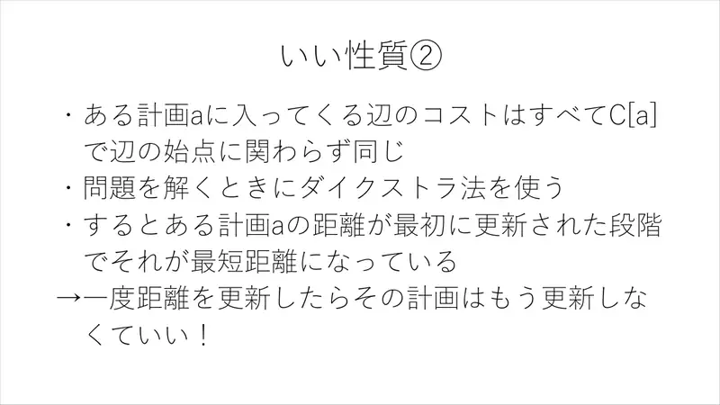
12Osobina 2. Svi bridovi koji ulaze u $a$ imaju istu cijenu $C_a$. U Dijkstri je zato prvo ažuriranje udaljenosti plana $a$ već konačno → nakon jednog ažuriranja plan više ne gledamo! -
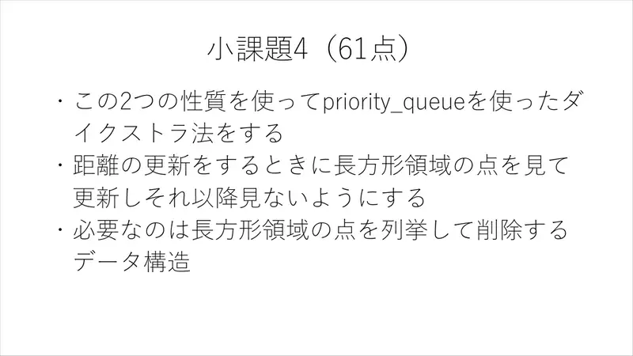
13Dijkstra s prioritetnim redom: pri ažuriranju enumeriraj točke pravokutnog područja i ukloni ih. Potrebna je struktura za enumeraciju i brisanje točaka u pravokutniku.
← → tipke ili klik na sliku
Koraci algoritma
Merge-sort stablo s brisanjem
izvorni slajdovi 14–17
-
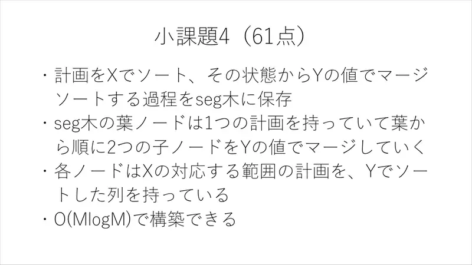
14Sortiraj planove po $X$; nad tim poretkom segmentno stablo u kojem svaki čvor drži planove svog $X$-raspona sortirane po $Y$ (spajanje djece kao u merge sortu). Izgradnja $O(M\log M)$. -
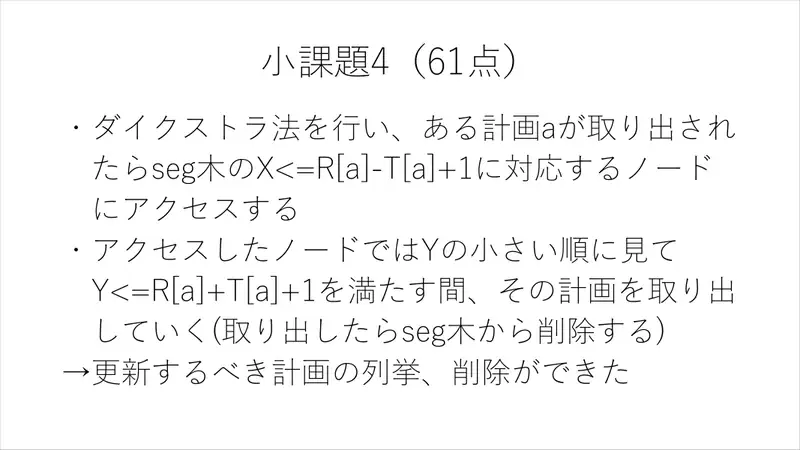
15Kad Dijkstra izvadi plan $a$: pristupi čvorovima koji pokrivaju $X \le R_a - T_a + 1$; u svakom čvoru uzimaj planove po rastućem $Y$ dok je $Y \le R_a + T_a + 1$ i briši ih iz stabla (pomakni pokazivač). -
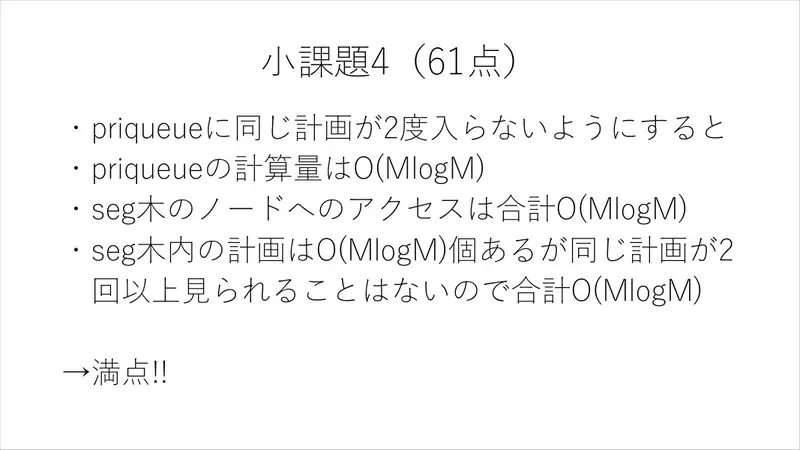
16Plan ulazi u red samo jednom → red $O(M\log M)$; pristupa čvorovima $O(M\log M)$; iako stablo drži $O(M\log M)$ kopija, svaka se kopija „vidi” najviše jednom → ukupno $O(M\log M)$. Puni bodovi! -
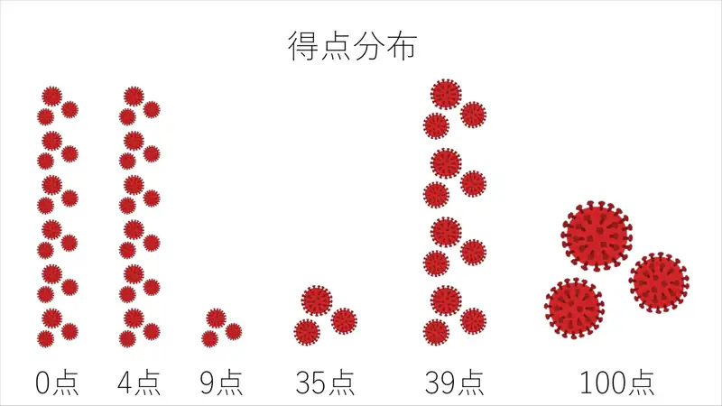
17Raspodjela bodova na kampu: 0, 4, 9, 35, 39, 100.
← → tipke ili klik na sliku
Sažetak
- Izliječeni interval se skuplja za 1 dnevno; skup planova valja $\iff$ postoji lanac dodirujućih planova od kuće 1 do kuće $N$: $L_b \le R_a - |T_b - T_a| + 1$.
- Najkraći put s cijenom brida $C_b$; sve ulazne cijene u vrh su jednake → svaki vrh se ažurira jednom.
- Enumeracija i brisanje kandidata segmentnim stablom (po znaku $T_b - T_a$, ili rotacijom $45^\circ$ + merge-sort stablo): $O(M\log M)$.